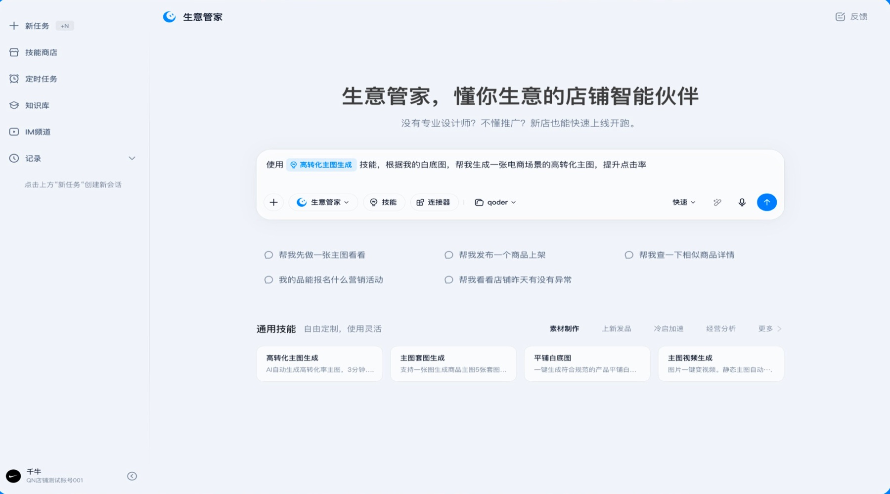
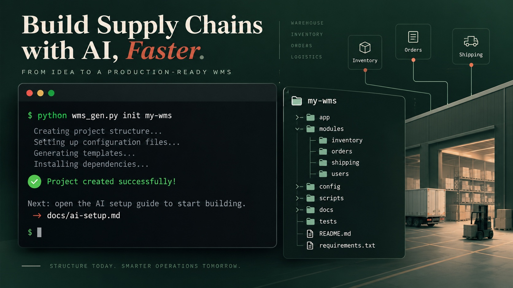

让供应链 Agent 从“能回答”，走向“能持续完成任务”。
我负责 Agent Z 客户端与存量供应链软件 AI+ 产品。围绕岗位化 Agent、任务调度、系统连接、协同执行和人工确认，推动 AI 能力进入真实供应链工作流。
查看 Agent Z 案例AI PRODUCT · SUPPLY CHAIN AGENTS
我是 Ziyan，拥有 5 年供应链产品经验，目前负责供应链 AI 产品。近两年聚焦商家 AI、Agent Z 与企业软件智能化，擅长把岗位流程、业务系统和人机协作机制转成可落地的产品能力。

个人实践 / AI 产品
把 AI 融入真实工作
SELECTED WORK / AI PRODUCT
从供应链岗位、业务系统和任务流程出发，探索 AI 产品怎样进入真实工作流，并交付可验证的结果。
我负责 Agent Z 客户端与存量供应链软件 AI+ 产品。围绕岗位化 Agent、任务调度、系统连接、协同执行和人工确认，推动 AI 能力进入真实供应链工作流。
查看 Agent Z 案例
我主导生意管家 2.0 AI 客户端产品设计，围绕店长、运营、美工三类角色，规划经营洞察首页并定义文本、任务执行、创意、文档和 ChatBot 五种交互模式。产品累计服务商家超过 400 万。
查看 AI 客户端框架案例
设计并落地 WMS 项目初始化 CLI，将目录结构生成、AI 环境配置与蓝图规则拉取串成标准启动流程，帮助团队从空目录进入蓝图编写与开发准备。
查看项目案例HOW I WORK
仓库、库存、履约与异常处理。先理解现场为什么这么做，再把规则放进产品。
在客户、业务、产品与研发之间建立共同语言，让方案从蓝图走到上线。
围绕任务、工具、权限与结果交付设计 Agent 产品，在关键决策处保留人的判断。
A NOTE TO THE NEXT TEAM